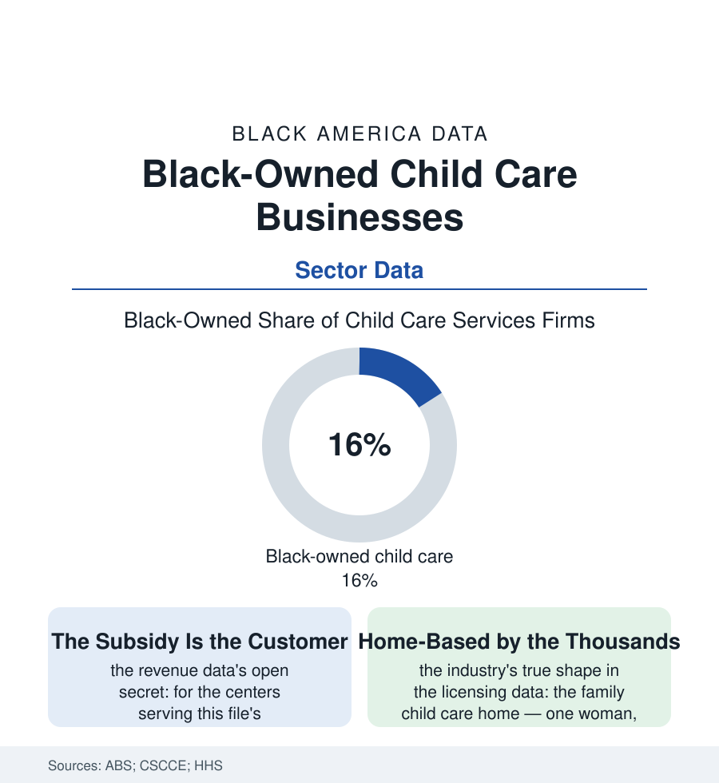

Black Business
The Daycare on the Corner: Black-Owned Child Care Businesses
America's child care runs substantially out of Black women's homes and storefronts — a licensed, inspected, essential industry priced like a favor. The child care business file.

The most essential small business in the American economy may be the one least often counted as a business at all: the child care center and the licensed family home, a sector disproportionately owned and operated by Black women, regulated like a hospital, reimbursed like a charity, and treated by every parent's crisis as critical infrastructure. This article reads the child care business file.
Licensed, Inspected, and Underpaid by Design
The model's arithmetic is set before the owner opens her doors: the state fixes her maximum class sizes by child age in the licensing code (the infant ratios — one adult to three or four babies — making infant care a mathematical loss at any tuition the neighborhood can pay, a structural deficit the industry data have documented for decades), her reimbursement in the subsidy system by the market-rate survey's circular logic (rates surveyed from the prices charged, the prices capped by the rates, the spiral published in the federal reports), her labor costs by a workforce the employment file prices at the economy's floor — a workforce that is substantially her own community's women, whose wages her tuition cannot raise without losing the families the mission exists to serve. Against that arithmetic stands the sector's Black ownership in its two forms: the center (the storefront or church-annex operation of the facility file, its enrollment a neighborhood institution — the center that raised three generations of one block's children in the community's own telling, its waiting list for the infant room the truest demand signal in the early-childhood data) and the family child care home, the licensing data's quiet majority of the sector's Black proprietors — the home-based provider whose business is her address, her hours the shift economy's own (the providers specializing in the nonstandard-hour care the centers will not offer, the hospital and warehouse shifts' children sleeping at Miss Johnson's because Miss Johnson built her license around their parents' schedules). The pandemic wrote the sector's stress test into the relief data: the stabilization grants' own accounting showing the centers of this file closing and reopening on margins of weeks, the federal money's expiration returning the arithmetic to its circular survey.
The Quality Ladder and the Ownership Ladder
The sector's improvement machinery is the quality-rating systems of the state data (the tiered stars whose documentation burden falls heaviest on the smallest operators — the home provider doing the accreditation file between the last pickup and her own children's dinner), and the file's forward data run through the ownership ladder the early-childhood system keeps almost building: the provider-to-owner pipelines (the shared-services alliances pooling the back office for home providers, the facility funds and the CDFI loans of the finance file sized for the center purchase, the retiring owner's center sold — in the succession data's best stories — to her own lead teacher). The demand side needs no subsidy of imagination: the childcare-desert maps of the policy data overlay this atlas's neighborhood maps almost exactly, the economist's 'market failure' being, at street level, the arithmetic of the first section — a business whose customers cannot pay its costs, whose workers cannot live on its wages, and whose owners, in this file disproportionately the community's own grandmothers and aunties made proprietor, hold the whole structure up at returns the census records and the neighborhood understands. The counts call them child day care services, NAICS 624410, some thousands of Black-owned firms. The blocks call them by their names — and call them, when the shift runs late and the center's lights are still on, exactly what they are: the reason the rest of the economy gets to work.
Reading the Child Care Business Data
The child care file is the business section's conscience: the industry every other industry depends on, priced as though it were a favor among neighbors — which, in this file's ownership, it literally is, formalized by license and held together by women the data count as proprietors and the families count as kin. The census publishes the firms. The pickup line at 6 p.m. publishes the review. Both verdicts are right, and only one of them can make Friday's payroll.
More in Black Business
Black-Owned Businesses: Counts, Receipts, and the Representation Gap
About 161,000 Black-owned employer firms and three million solo ventures: how the Census Bureau counts Black business ownership, where firms concentrate, and the gap between population share and business share.
Black Median Net Worth: The Wealth Gap in Federal Reserve Data
The Federal Reserve puts Black median family net worth at $44,900, against $285,000 for White families — about 16 cents on the dollar. The widest gap in economic data.
Black Buying Power: The $1.8 Trillion Consumer Economy
Black buying power is estimated at about $1.8 trillion — larger than the economy of most nations. What the figure measures, who produces it, and what it buys.
Source: U.S. Census Bureau Annual Business Survey; National Association for the Education of Young Children; Center for the Study of Child Care Employment; U.S. Department of Health and Human Services child care data.